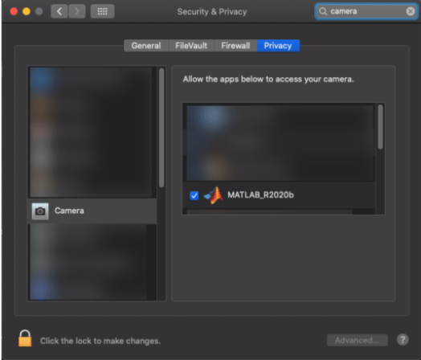

Creating a connection to a Webcam using the webcam object may result in a connection error.
Ensure the Webcam is UVC compliant by checking its user manual.
Ensure MATLAB® is allowed to access the Webcam by enabling the following settings depending on your operating system:
Windows- Click Start> Settings> Privacy> Camera and select Allow desktop apps to access your camera.
Mac- Click System Preference> Security & Privacy. Search for Camera and select MATLAB.

Linux- No selection is required. Webcam access is allowed by default.
The tilt and pan property value adjustments are not visible in a zoomed out webcam video preview.
The tilt and pan property adjustments are not visible in the Webcam preview when completely zoomed out. Zoom in to view the effects.